예전 사람들은 커피를 어떻게 끓였을까 ? - 카우보이 커피부터 캡슐 커피까지
게시: 2017-05-06T17:58:44+09:00
제가 직접 만들어본 최초의 원두커피는 회사 들어와서 본 종이필터로 거르게 되어 있는(drip brewing) 커피메이커로 만든 것이었습니다. 이때까지만 해도 원두커피가 인스턴트 커피보다 훨씬 맛있다는 생각은 들지 않았습니다. 그냥 '미국인들이 마시는 커피는 마치 숭늉처럼 묽구나' 하는 정도였지요. 제가 처음으로 제대로 된 아메리카노를 마셔본 것이 언제였는지는 기억이 안 나는데, 그건 확실히 여태까지 마시던 커피와는 달랐습니다. 이걸 마셔보니 전에 마시던 드립 원두 커피의 맛이 형편없게 느껴졌습니다. 전에 존 그리셤의 법정 쓰릴러를 읽다가 변호사가 증인을 만나러 들린 싸구려 식당에서 'bad coffee'를 마시는 장면이 나오는데, 그 맛이 어떤 맛인지 마치 알 것 같은 느낌이었지요. 그 이후로는 (아마 제가 배때지에 기름기가 껴서 그런지도 모르겠는데) 인스턴트 커피나 드립 원두 커피는 거의 마실 일이 없었습니다. 최근에 마셔본 덧치 커피는 또 다른 맛이더군요.
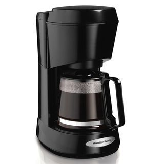
(바로 이런 커피메이커... 이런 전기 드립 커피메이커가 시판되기 시작한 것은 1970년대부터라고 합니다. 2000년대까지도 미국이나 한국이나 많은 회사 사무실에서는 이런 것으로 커피를 만들어 마셨습니다.)
생각해보면 차에 비해 커피는 볶고 빻고 가는 것도 성가신 일이지만 그 이후에 어떻게 내리느냐 하는 방법도 매우 다양하고 또 힘든 과정입니다. 제가 즐겨 읽는 나폴레옹 시대 영국 해군의 모험담인 Aubrey - Maturin 시리즈의 주인공 잭 오브리와 스티븐 머투어린은 커피를 매우 즐기는 캐릭터입니다. 이들이 커피를 볶거나 갈거나 마시는 장면은 제법 자주 나오는데 비해, 커피를 내리는(brew) 장면은 딱 한군데에 나옵니다. 볶은 커피 콩을 갈아서 고운 천 위에 놓고, 뜨거운 물을 부어 내리는 방식으로 나오더군요. 그러니 드립 원두 커피였던 셈입니다.
그러나 커피 만드는 방법은 나라와 시대별로 매우 달라서, 당시 모든 사람들이 다 그런 식으로 커피를 만들어 마시지는 않았습니다. 가령 1930년대까지만 해도 커피 콩 갈은 것을 직접 물에 넣고 끓이는 것이 미국에서는 일반적인 방법이었다고 합니다. 헤밍웨이의 단편 소설인 '두 개의 심장을 가진 강'(BIG TWO-HEARTED RIVER) 중에, 1차 세계대전에서 돌아온 주인공 닉이 캠핑에서 커피를 끓이는 장면이 생생하게 묘사됩니다.
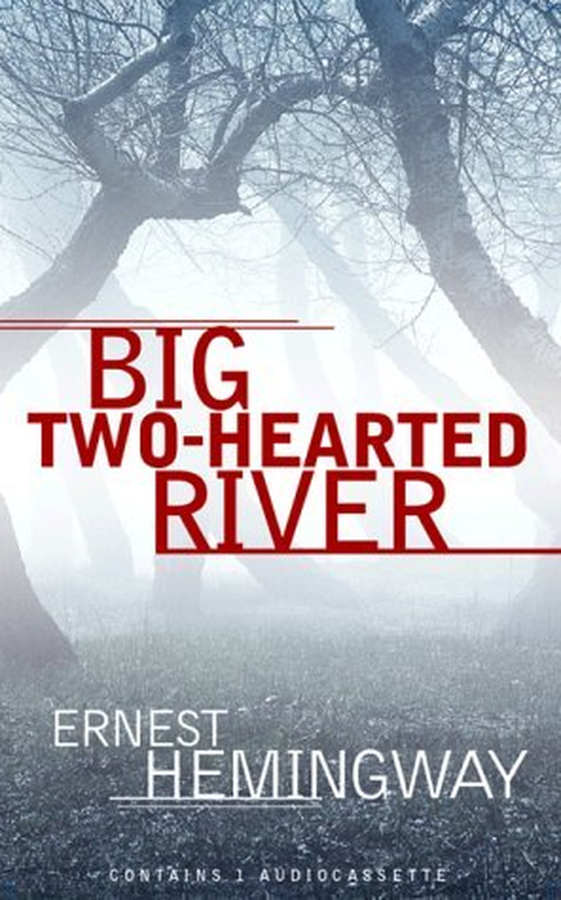
----------------
닉은 큰 못을 하나 더 나무에 박고 물이 가득찬 양동이를 거기에 걸었다. 그는 커피 포트를 거기에 담가 절반 정도 물을 채우고 나무조각을 불판 아래의 불에 좀더 집어 넣은 뒤, 그 위에 커피 포트를 올려 놓았다. 그는 어떤 방식으로 커피를 만들었는지 기억할 수가 없었다. 그는 홉킨스와 커피 만드는 방법에 대해 논쟁을 벌였던 것은 기억이 났지만, 결국 어느 쪽 방법을 택했는지는 기억이 나지 않았다. 그는 그냥 커피가 끓어 오르도록 내버려두기로 했다. 그러자 비로소 그게 홉킨스의 방식이었다는 것이 기억났다. 그는 한때 모든 면에 있어서 홉킨스와 논쟁을 벌이곤 했다.
(중략)
그가 지켜보는 가운데 커피가 끓어올랐다. 뚜껑이 들리더니 커피와 커피찌끼가 포트 옆으로 흘러내렸다. 닉은 커피 포트를 불판에서 꺼내 들었다. 그건 홉킨스를 위한 승리였다. 그는 통조림 살구를 덜어먹던 컵에 설탕을 넣고는 커피를 좀 따른 뒤 식기를 기다렸다. 커피를 따르기엔 너무 뜨거워서 그는 커피 포트 손잡이를 쥐기 위해 모자를 써야 했다. 그는 커피가 포트 안에서 우려지기를 기다릴 생각은 전혀 없었다. 적어도 첫 잔은 아니었다. 그건 제대로 된 홉킨스 방식이어야 했고, 홉킨스는 그럴 자격이 있었다. 그는 매우 진지하게 커피를 마시는 사람이었다. 그는 닉이 아는 사람 중 가장 진지한 사람이었다.
(중략)
닉은 커피를 마셨다. 홉킨스 방식에 따른 커피였다. 맛을 보니 썼다. 닉은 웃었다. 그건 이 이야기에 어울리는 훌륭한 결말이었다.
-------------------
여기에 묘사된 것처럼 간 커피 콩을 직접 물에 넣고 끓이는 방식을 카우보이 커피라고 하는데, 이는 주로 미국이나 중동에서 유행하던 방식입니다. 그러나 이 헤밍웨이 소설 속에서 결말이 나와 있듯이, 커피 콩을 물에 넣고 끓이는 것은 맛이 쓸 수 밖에 없습니다. 원래 커피 특유의 향을 담은 기름 성분은 섭씨 96도에서 커피 콩으로부터 추출되는데, 이건 물의 끓는 점에서 아슬아슬하게 낮은 온도입니다. 문제는 물이 끓는 점 100도에 이르게 되면 커피 콩에서는 그 향유 뿐만이 아니라 쓴 맛을 내는 산 성분까지 추출이 된다는 점이지요.
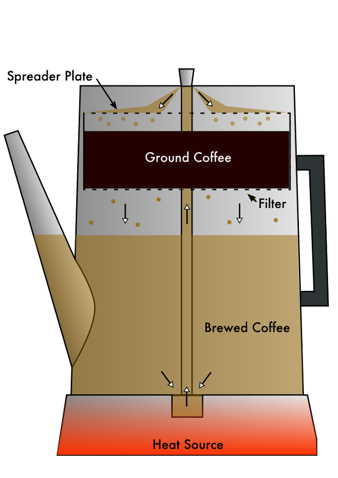
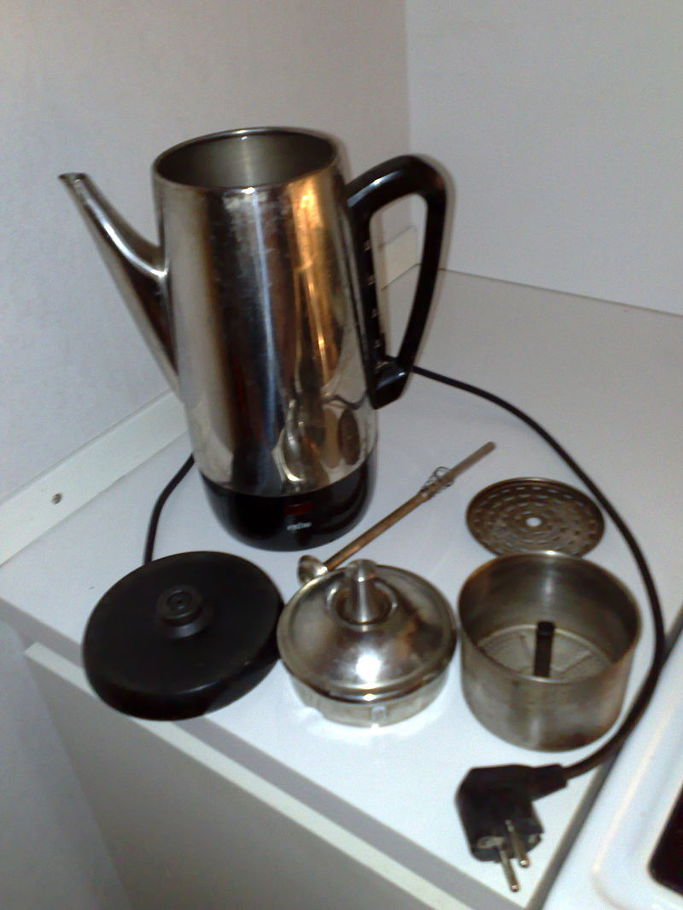
(퍼콜레이터입니다. 저도 90년대 후반 회사 사무실에서 저런 거 썼었습니다.)
그래서 유럽에서는 잭 오브리처럼 뜨거운 물을 간 커피 콩 위에 뿌리는 식의 커피를 즐겨 마셨나 봅니다. 그러나 그런 방식은 일손이 너무 많이 갔으므로, 퍼콜레이터(percolator, 여과식 커피 포트)라는 독특한 형태의 커피 포트가 만들어졌는데, 최초의 퍼콜레이터는 영국 군인이자 군인인 럼포드 백작(Count Rumford, Sir Benjamin Thompson)이 나폴레옹 전쟁이 한창이던 1810년~1814년 사이에 만들었다고 합니다. 현대적인 방식, 즉 커피 포트 가운데에 끓는 물을 뿜어 올리는 금속 관이 내장된 형태의 퍼콜레이터는 1819년 로랑(Laurens)이라는 파리 사람이 만들었고, 이 발명품은 여러 단계를 거쳐 1889년 미국에서 굿리치(Hanson Goodrich)라는 이름의 농부가 특허를 받았습니다. 이 퍼콜레이터는 나중에 전기를 이용하는 방식으로 대용량화되었고, 1970년대까지 미국의 대형 식당 등에서는 그런 전기 퍼콜레이터를 이용해서 드립 커피를 만들었습니다. 그러다 1970년대 이후 간편한 종이 필터를 이용하는 가정용 전기 드립 커피 메이커가 도입되면서 퍼콜레이터의 인기가 급격히 내려갔다고 합니다.
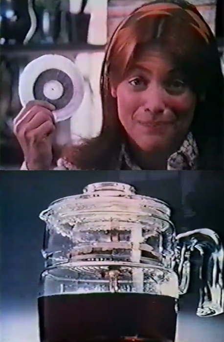

(이 화면은 1970년에 General Foods에서 내놓은 Max-Pax 커피 카트리지의 TV 광고입니다. Max-Pax는 도넛 모양의 필터 속에 그라운드 커피를 일정량 포장한 것으로서, 이걸 퍼콜레이터 안에 넣으면 커피가 만들어지는 형태의 제품입니다. 그라운드 커피 찌꺼기를 긁어낼 필요가 없으니 매우 편리했지요. 그러나 불과 6년 후인 1976년에 전기 드립 커피 메이커에 밀려 생산이 중단되었습니다. 전체 광고 영상은 여기서 보실 수 있습니다. https://www.youtube.com/watch?v=uE7m8JJ_7jw )
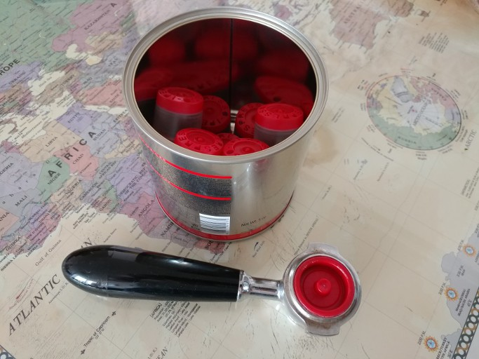
(저희 집에서 소비하는 일리 캡슐 커피입니다. 플라스틱 캡슐이 지구를 더럽히는 것은 물론이고, 특히 저 아름다운 알루미늄 깡통을 버릴 때마다 정말 아깝습니다.)
저희 집에서는 일리(Illy) 커피 캡슐 머신으로 커피를 만들어 마십니다. 편리하고 빠르고 게다가 맛도 아주 훌륭한데, 단지 제가 커피를 마실 때마다 낭비되는 이 플라스틱 캡슐 포장들을 보면 지구에게 미안하기는 합니다. 그런데, 최근에 TV에서 방영되는 알 파치노 - 로버트 드 니로 주연의 갱 영화 'Heat'를 보다보니, 평범한 형사 반장인 알 파치노의 작은 집 주방에도 캡슐 커피 머신이 놓여 있는 것이 보이더군요. 이 영화는 1995년 작인데, 이미 당시 미국에서는 캡슐 커피가 일반적이었나 봅니다. 최초의 캡슐 커피는 스위스 회사인 네슬레(Nestlé)에서 근무하던 스위스 엔지니어 에릭 파브르(Eric Favre)가 1976년에 최초로 발명하고 특허도 냈습니다. 그러나 흥행에는 완전히 실패했다가 약 10년 뒤에야 인기를 얻기 시작했지요.
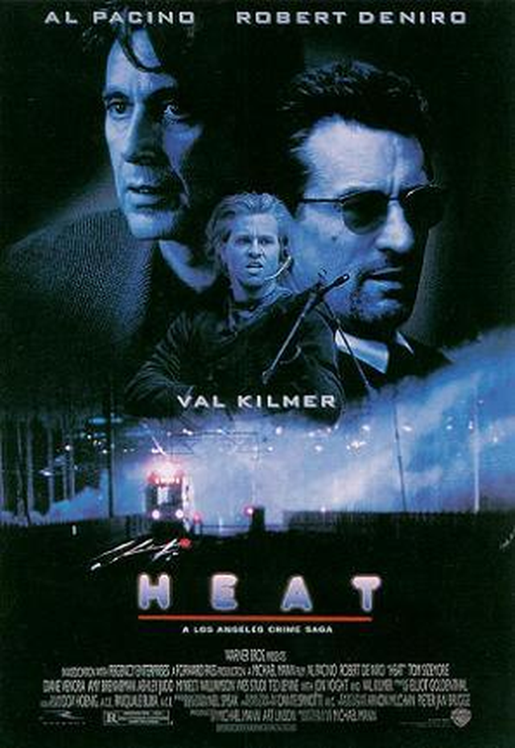
(남자의 영화, Heat)
캡슐 커피에서 만드는 커피는 한마디로 에스프레소(Espresso)입니다. 에스프레소는 끓는 물과 고압을 이용해 커피를 추출하기 때문에 고형분까지 콜로이드(colloid, 현탁액)의 형태로 일부 뽑아져 나옵니다. 그래서 에스프레소 잔의 바닥에는 일부 찌꺼기가 남고 또 그 콜로이드가 크레마(crema)로 잔 위에 뜨게 되는 것이지요. 이 크레마는 오직 에스프레소에서만 볼 수 있는 것인데, 그래서인지 크레마가 없는 커피는 왠지 맛없게 느껴지기조차 합니다. 하지만 이 크레마는 지방 성분 위주이다보니, 콜레스테롤 함유량이 높아 건강에는 좋지 않다고 합니다.
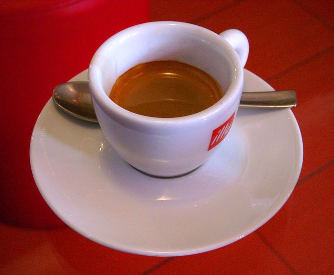
(저 크레마는 에스프레소에서만 볼 수 있는 것입니다.)
에스프레소는 커피를 뽑아내는데 필요한 고압을 만들기 위해 특별한 기구가 필요하므로, 그 역사가 비교적 짧은 편입니다. 1884년에 모리온도(Angelo Moriondo)라는 이탈리아인이 최초의 에스프레소 머신에 대한 특허를 냈는데, 그 이후 20세기 전반에 이탈리아에서 서서히 인기를 얻기 시작했습니다. 영국에서는 1950년대에야 에스프레소의 인기가 올라가기 시작했다고 하고, 미국에 본격적으로 에스프레소가 활성화된 것은 스타벅스 제2의 창업자인 하워드 슐츠(Howard Schultz)가 1980년대 밀라노 출장 중에 에스프레소 바를 보고 미국 스타벅스 매장에 도입한 것이라고 합니다. 그나마 미국인들 입맛은 에스프레소를 감당하지 못했기 때문에 거기에 물이나 우유를 탄 아메리카노나 라떼 같은 것이 많이 팔렸지요.
지금 세계는 이 캡슐 커피 또는 별다방 콩다방 등에서 파는 에스프레소 기반의 커피가 대세인 듯 합니다. 그러나 정작 전세계 통계치를 보면 세계에서 가장 많이 마시는 커피의 형태는 바로... 인스턴트 커피입니다. 그것도 고급 커피에 계속 밀려나는 것이 아니라, 오히려 그라운드 커피나 원두 형태로 판매되는 커피보다 훨씬 더 빨리 성장하고 있습니다. 아마 그런 말을 들으시면 '인도나 중국 등 아시아 신흥국의 경제가 빠르게 성장하면서 커피를 안 마시던 그쪽 나라들이 커피를 마시면서 그렇게 되나 보다'라고 생각하실 겁니다. 그것도 사실이긴 한데, 우아한 유럽인들도 인스턴트 커피를 의외로 많이 마십니다. 특이한 것은 호주인데, 호주는 아시아보다 오히려 더 인스턴트 커피 비율이 더 큽니다. 유럽 내에서도 특이한 것은 또 영국입니다. 영국은 아시아 국가들처럼 인스턴트 커피를 절대적으로 더 많이 마십니다. 영국에서 인스턴트 커피를 즐겨 마시는 것에 대해서는 2차 세계대전 당시 오랫동안 미군이 주둔했던 관계로, 그때 미군들이 마시던 인스턴트 커피에 익숙해졌다는 설명이 있습니다. 그러나 영국 못지 않게 미군이 오래 주둔한 독일이나 프랑스에서는 인스턴트 커피가 그렇게까지 유행하지 않는 것을 보면 그런 설명에 쉽게 납득이 가진 않습니다.
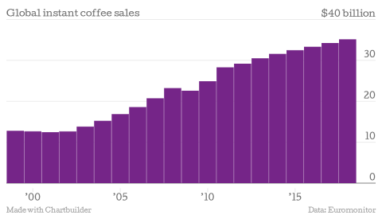
(무섭게 성장하는 인스턴트 커피 시장입니다. 중국 및 인도의 성장과 거의 일치하는 것은 맞네요.)
정작 인스턴트 커피를 발명한 것은 프랑스인이었습니다. 흔히 일본계 미국인인 사토리 가토가 1901년 전미 박람회에서 발표한 것이 최초라고 하지요. 그러나 실제로는 1881년 알레(Alphonse Allais)라는 프랑스인이 이미 프랑스에서 특허를 낸 바 있습니다. 그리고 상업적으로 성공적으로 팔리기 시작한 인스턴트 커피도 유럽인 스위스에서 네스카페(Nescafé) 브랜드로 1938년에 시작되었습니다. 그에 비해 미국의 인스턴트 커피 대명사인 맥스웰 하우스 인스턴트 커피(Maxwell House Instant Coffee)는 1945년에야 나왔는데, 이는 그 모기업인 제네럴 푸드(General Foods Corporation)가 1942년부터 미군에 납품하기 위한 인스턴트 커피를 만들기 시작한 것에서 비롯된 것입니다.
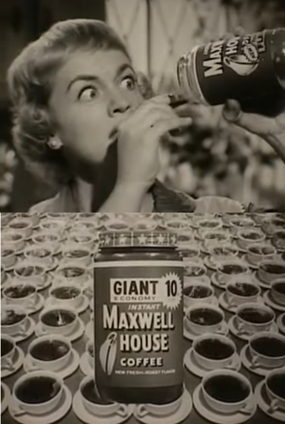
(맥스웰 하우스 인스턴트 커피의 TV 광고입니다. 바쁜 아침, 남편이 출근하기 전에 줄 커피가 마침 딱 떨어져 당황하는 주부의 모습이 핵심 포인트입니다.)
제가 아주 어렸을 때, 토요일인가 일요일에, 월트 디즈니 만화 또는 영화가 했었습니다. 그날 나온 단막 TV용 영화는, 시골 깡촌에서 할아버지와 단둘이서 사는 어떤 꼬마 이야기였습니다. 물론 가난한 가족이었지요. 그런데 할아버지가 연세가 많으셔서, 결국 몸져 누우시게 되었습니다. 그러자 이 꼬마가, 나름대로 다 컸다고 침대에 누운 할아버지에게 아침 식사를 차려 가져옵니다. 그런데 할아버지가 토스트를 먹으려고 보니, 새카맣게 탄 거에요. 꼬마가 미안하다는 듯 조금 태웠다고 말합니다. 할아버지는 입맛을 다시더니 지금은 생각이 없다면서 그 토스트를 내려놓고, 커피만 마시겠다고 합니다. 그런데 꼬마가 또 미안하다는 듯이, '진짜 커피를 끓일 줄 몰라서 인스턴트 커피를 끓였다' 고 합니다. 그러자 할아버지가 그 커피를 조금 마셔 보고는 다시 내려놓으면서, 나중에 마시겠다고 하는 겁니다 !!! 그때 그 어린 나이에 제가 받은 충격은, 나름대로 컸습니다. 당시 제가 보던 모든 커피는 다 인스턴트 커피였거든요. 그런데 미국에서는 그 시골의 가난한 할아버지조차도 '인스턴트 커피는 차라리 안마시고 만다'라고 하다니 !!!
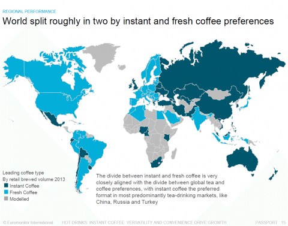
(세계 각 지역별 소비되는 커피 형태입니다. 진한 녹색이 인스턴트 커피입니다.)
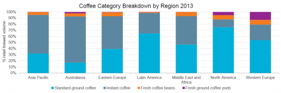
(국가별로 신선원두를 더 소비하느냐 인스턴트 커피를 더 소비하느냐를 보여주는 지도입니다. 언듯 보면 잘 사는 나라는 신선원두를, 못 사는 나라는 인스턴트 커피를 주로 소비하는 것 같지만, 영국과 호주를 보면 꼭 그렇지도 않습니다. 전통적으로 차를 많이 마시는 일본과 인도가 신선원두를 더 많이 선호하는 것으로 분류되는 것을 보면, 이 나라들은 차를 하도 많이 마셔서 인스턴트 커피를 아예 마실 일이 별로 없기 때문에 그런 것 아닐까 합니다.)
결국 원래 커피를 마시던 나라들은 신선 원두를 선호하는데 비해, 영국이나 호주, 그리고 나머지 아시아 국가들처럼 차를 더 선호하던 나라들은 인스턴트 커피도 '뭐 나쁘지 않네'하며 잘 마시는 것입니다. 여기서 더 특이한 것은 바로 미국입니다. 보스턴 차 사건을 겪은 미국은 원래부터 커피를 더 선호하는 나라이긴 합니다만, 그걸 감안하더라도 모든 먹을 것을 빨리빨리 대충 간편하게 때우려는 미국인들이 정작 커피에 있어서만큼은 그 편하고 빠른 인스턴트 커피를 극혐한다는 것은 매우 신기한 현상입니다. 여기에 대해서는 별다른 설명이 없는데, 누군가 따로 연구 좀 해줬으면 합니다.
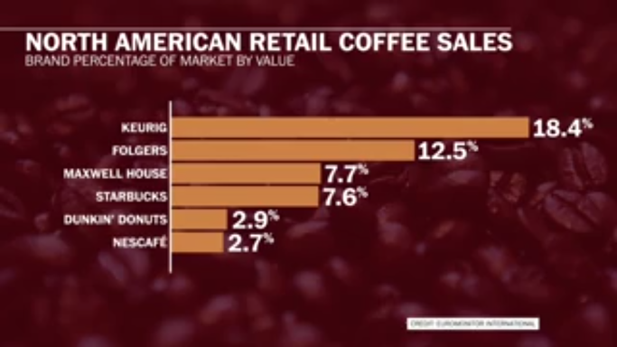
(미국내 커피 브랜드 별 판매량입니다. Keurig 커리그 라는 브랜드는 제게는 듣보잡인데 미국내 독보적인 1위네요. 어느 기계에서나 호환되는 K-cup이라는 캡슐 커피 시스템이 그 비결의 하나라고 합니다. 조지 클루니를 곁들인 네스프레소를 거느린 네스카페는 생각보다 너무 하위네요.)
원본 :
https://en.wikipedia.org/wiki/Coffee_preparation
https://en.wikipedia.org/wiki/Instant_coffee
https://www.washingtonpost.com/news/wonk/wp/2014/07/14/almost-half-of-the-world-actually-prefers-instant-coffee/?utm_term=.11a5b8733d4f
http://terms.naver.com/entry.nhn?docId=3403544&cid=58364&categoryId=58364
https://en.wikipedia.org/wiki/Maxwell_House
https://en.wikipedia.org/wiki/Nespresso
https://en.wikipedia.org/wiki/Coffeemaker
https://en.wikipedia.org/wiki/Espresso
https://en.wikipedia.org/wiki/Espresso_machine
https://en.wikipedia.org/wiki/Starbucks